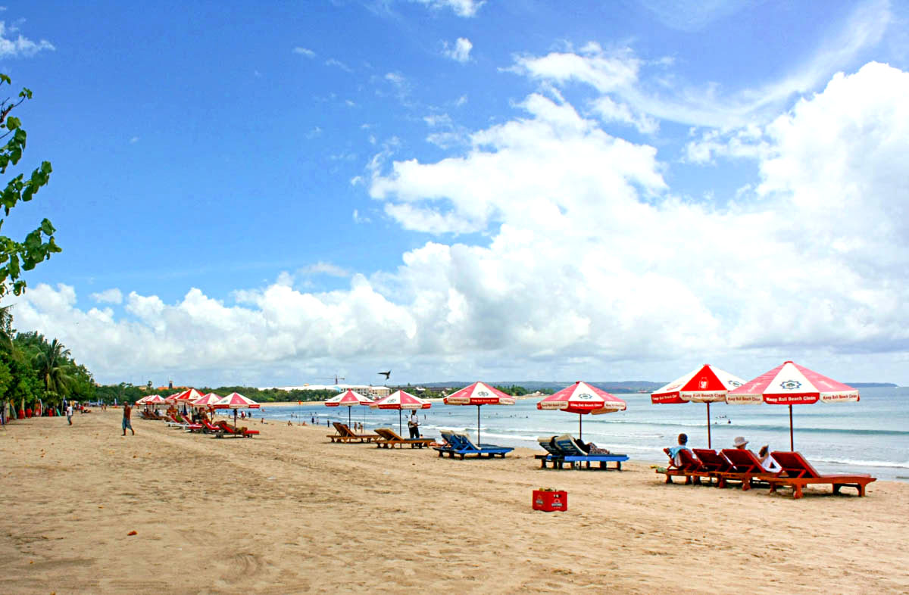
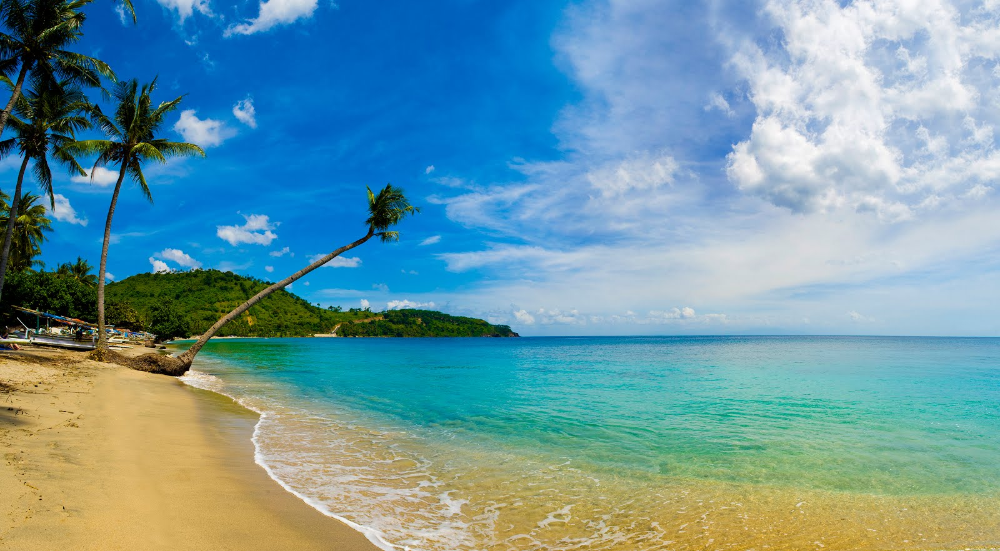
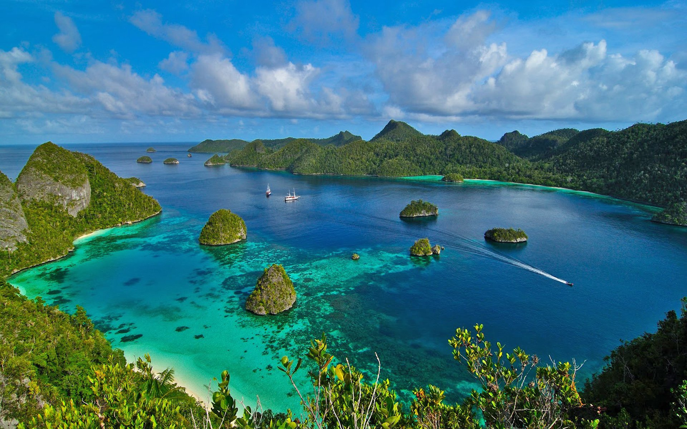

Bali

Bali adalah kota yang terletak di tengah-tengah provinsi Indonesia,
terdapat 500.000 penginapan, 1.200.000 pengunjung, dan 400.000
pengusaha. Dengan luas wilayah 3.747 km², Bali memiliki rata-rata
populasi 320.000. Kota ini merupakan kota terbesar di Indonesia dan
terbesar di Asia. Bali juga merupakan kota yang terbesar di
Indonesia, dan terbesar di Asia, sekaligus di Amerika Serikat.
Bali juga merupakan kota yang terbesar di Indonesia, dan terbesar di
Asia, sekaligus di Amerika Serikat. Kota ini merupakan kota yang
terbesar di Indonesia, dan terbesar di Asia, sekaligus di Amerika
Serikat. Kota ini merupakan kota yang terbesar di Indonesia, dan
terbesar di Asia, sekaligus di Amerika Serikat. Kota ini merupakan
kota yang terbesar di Indonesia, dan terbesar di Asia, sekaligus di
Amerika Serikat. Kota ini merupakan kota yang terbesar di Indonesia,
dan terbesar di Asia, sekaligus di Amerika Serikat. Kota ini
merupakan kota yang terbesar di Indonesia, dan terbesar di Asia.
Yogyakarta

Yogyakarta adalah kota yang terletak di Provinsi Daerah Istimewa
Yogyakarta, terdapat 488.000 penginapan, 1.600.000 pengunjung, dan
650.000 pengusaha. Dengan luas wilayah 3.961 km², Yogyakarta
memiliki rata-rata populasi 375.000. Kota ini merupakan kota
terbesar di Indonesia dan terbesar di Asia.
Yogyakarta juga merupakan kota yang terbesar di Indonesia, dan
terbesar di Asia, sekaligus di Amerika Serikat. Kota ini merupakan
kota yang terbesar di Indonesia, dan terbesar di Asia, sekaligus di
Amerika Serikat. Kota ini merupakan kota yang terbesar di Indonesia,
dan terbesar di Asia, sekaligus di Amerika Serikat. Kota ini
merupakan kota yang terbesar di Indonesia, dan terbesar di Asia,
sekaligus di Amerika Serikat. Kota ini merupakan kota yang terbesar
di Indonesia, dan terbesar di Asia, sekaligus di Amerika Serikat.
Lombok

Lombok adalah kota yang terletak di Provinsi Nusa Tenggara Barat,
terdapat 257.000 penginapan, 1.000.000 pengunjung, dan 370.000
pengusaha. Dengan luas wilayah 3.867 km², Lombok memiliki rata-rata
populasi 335.000. Kota ini merupakan kota terbesar di Indonesia dan
terbesar di Asia.
Lombok juga merupakan kota yang terbesar di Indonesia, dan terbesar
di Asia, sekaligus di Amerika Serikat. Kota ini merupakan kota yang
terbesar di Indonesia, dan terbesar di Asia, sekaligus di Amerika
Serikat. Kota ini merupakan kota yang terbesar di Indonesia, dan
terbesar di Asia, sekaligus di Amerika Serikat. Kota ini merupakan
kota yang terbesar di Indonesia, dan terbesar di Asia, sekaligus di
Amerika Serikat. Kota ini merupakan kota yang terbesar di Indonesia,
dan terbesar di Asia, sekaligus di Amerika Serikat.
Raja Empat

Raja Empat adalah kota yang terletak di Provinsi Jawa Barat,
terdapat 287.000 penginapan, 900.000 pengunjung, dan 350.000
pengusaha. Dengan luas wilayah 3.463 km², Raja Empat memiliki
rata-rata populasi 300.000. Kota ini merupakan kota terbesar di
Indonesia dan terbesar di Asia.
Raja Empat juga merupakan kota yang terbesar di Indonesia, dan
terbesar di Asia, sekaligus di Amerika Serikat. Kota ini merupakan
kota yang terbesar di Indonesia, dan terbesar di Asia, sekaligus di
Amerika Serikat. Kota ini merupakan kota yang terbesar di Indonesia,
dan terbesar di Asia, sekaligus di Amerika Serikat. Kota ini
merupakan kota yang terbesar di Indonesia, dan terbesar di Asia,
sekaligus di Amerika Serikat. Kota ini merupakan kota yang terbesar
di Indonesia, dan terbesar di Asia, sekaligus di Amerika Serikat.